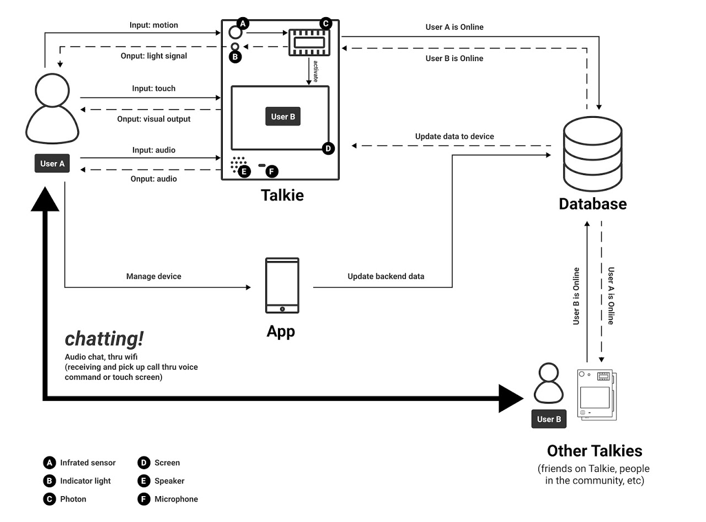

Talkie
Period: 2020
Expertise: product design
Team: Annie Yang (D), Daniel Tsai (D), Ray Chen (D), Shih-Yu Chu (D)
Bump into Your Friends and Colleagues Anywhere You Want
This project aims to address the issue of lacking social interaction during the pandemic. We found that helping people to maintain a casual relationship with their friends and acquaintances can help release stress. We built a system, Talkie, that allows people to “bump into their friends, peers, or colleagues at home.” Talkie is a device you can put anywhere at home, it will detect your approaching and connect you with other people if they are approaching their Talkie at the same time.
Motivation
The year of 2020 has changed many things, including the ways people live their own lives. WFH blurs the boundary between people’s private space and work environment, and gives them more freedom to organize their daily activities. However, many people argue that WFH prevents people from connecting with others and forces them to live a monotonous life. While we do not want to judge the rationality of WFH, we hope to utilize the pervasive design to help people who seek for changes.
Key Insight
Throughout the semester, we designed formative study to answer the following research questions:
What does WFH life look like for the users? Are there any good changes or bad changes?
What are the main activities of their day?What are some activities that make their experience better?
How do they interact with their space? What are some devices they interact with? What objects do they use for different activities?
How do they remain social connection
How is their mood? How do they deal with emotional changes during the pandemic?
For the diary study, we recruited 7 participants for the research, 3 of whom are working professionals, while the other are graduate and undergraduate students. The interviews focused on the research questions and diverged from the design goals to the user's personal feelings. We conducted the interview with UMSI students as well as some professional UX designers, whose feedback helped us re-scope the design and understand the diary study data. Based on the data collected in the studies, we have the following findings.
Users’ negative emotions are not solely because of COVID. However, COVID made them worse.
They can’t handle negative emotions through methods/activities they’re used to due to COVID.
Users seek interaction from friends, family or the environment.
Experience
prototype
Thanks to the formative study, we came up with some design iterations, and discovered several design opportunities that may solve the user problems. To further understand those potential challenges and opportunities, we then conducted 6 user enactments with our future users, and specifically targeting the following scenarios:
Bumping into friends while users are not ready
Changing privacy settings on the device
Talking with friends/ Initiate the talk
Pick up the call from others
Community features - joining others’ talk
Adding friends
By analyzing the key insights of our studies and brainstorming during the meeting, we came up with some main take-aways from the study, which served as the new starting point of the following design ideation and selection:
Privacy is one of the first priorities that we need to work on in future designs.
When designing the chatting experience, we should also pay attention to the social norms that apply to communications.
Users need more feedback when they interact with the design.
Managing friends is as important as talking to friends.
App management could be not limited to the physical device, but also work on mobile apps.
System
Concept
After rounds of brainstorming and iterations, we proudly put forth these three key features that can help enrich users' social scene in the pandemic.
1.
Make At-home Social Scene Vibrant
But still allow clients to communicate with us in the dashboard
2.
“Bump” into Your Friends
The new dashboard needs to show the status of hiring process, and allows clients to move forward with the hiring process on their own
3.
Connect with Your Groups
Talkie also enables people to connect with groups. We realize that people often feel attached to their close groups such as their family, school cohorts, colleges, or just buddies in real life. Users can do it through Talkie too. Users can form group chats with the group members who are online. During the group chat, they can also pull in other members who just entered Talkie’s virtual playground.
Design
Our prototype is constructed with the following 2 parts: a 3D model made with Cinema 4D to visualize the appearance of our device Talkie, and a user interface and interaction made with Figma. Overall, our prototype includes the following features:
1.
Virtual space
We structured how the virtual space should look like and how it should function mainly in Figma. Basically, in the virtual space, users' avatar will be displayed and users can see who is also online to interact with.
2.
Online and offline switch
One of the most crucial feature is the online and offline switch, because it's related to users' privacy. For both of the 3D modeling and user interface, we both demonstrated the switch, which is also interactive in the video.
3.
Companion app
In the video, we also showed that the main character was using a companion app to control Talkie. The app is mainly used as a remote control so that users can easily manage their presence in the virtual space of Talkie.
4.
Voice command
We also prototyped Talkie's voice by using the voice from NaturalReaders ( https://www.naturalreaders.com/). We chose this service because it's most natural and closest real human's intonation and voice.
5.
Motion sensor
In the 3D model, we displayed the sensor at the top of the device. From our study, we know that privacy is user's major concern when considering using our product. Thus, we replaced the camera with motion sensor. The green light next to the sensor is indicating that the device is turned on.
Demo
With the demo, we want to express the life change that Talkie can bring to our targeted users. Hence we depicted the users' at-home social scene while using Talkie's key features.
System
Proposal
Our entire system includes a device (the Talkie), a backend server, and a companion app. The core of the device is the photon which controls the signal input and output. For the signal input, the device uses an infrared sensor to detect user's motion, and has a touch screen and a microphone which will take users' touch and voice command respectively. For the signal output, we have a signal indicator to inform users whether they are detected or not, a display screen to display information of other users, and a speaker to prompt users to take actions (e.g. "Your friend A is online, do you want to talk with him/her?"). The photon will connect to the database through internet (wifi), communicating the status of the users, and through the database, connecting with other Talkies. Once a user connects to a friend on Talkie, they can then chat with each other trough an audio call. The companion app connects to the database. The app is mainly for users to manage their device device, e.g. switching online/offline status, and manage their friends.
